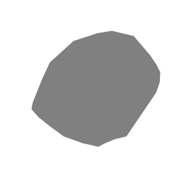
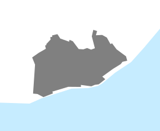

Babylon, 500 BCE population c. 150,000 Athens, 350 BCE population c. 60,000 Rome, 200 BCE population c. 200,000 Alexandria, 100 BCE population c. 400,000 Jerusalem, 50 CE population c. 70,000 Luoyang, 100 CE population c. 400,000 Rome, 300 CE population c. 800,000 Constantinople, 500 CE population c. 500,000 Chang'an, 700 CE population c. 1,000,000 Cordoba, 1100 CE population c. 100,000 Merv, 1100 CE population c. 200,000 Fez, 1200 CE population c. 200,000 Hangzhou, 1200 CE population c. 600,000 Milan, 1200 CE population c. 100,000
Cairo, 1300 CE population c. 400,000 London, 1300 CE population c. 80,000 Granada, 1400 CE population c. 100,000 Lisbon, 1400 CE population c. 60,000
Paris, 1400 CE population c. 300,000 Seoul, 1400 CE population c. 100,000 Beijing, 1500 CE population c. 700,000 Florence, 1500 CE population c. 60,000 Naples, 1500 CE population c. 100,000 Seville, 1500 CE population c. 60,000 Tenochtitlan, 1500 CE population c. 200,000 Venice, 1500 CE population c. 200,000 Vijaynagara, 1500 CE population c. 300,000 Moscow, 1600 CE population c. 100,000 Beijing, 1800 CE population c. 1,100,000

 Constantinople, 500 CE
Constantinople, 500 CE Chang'an, 700 CE
Chang'an, 700 CE Hangzhou, 1200 CE
Hangzhou, 1200 CE Seoul, 1400 CE
Seoul, 1400 CE Florence, 1500 CE
Florence, 1500 CE Tenochtitlan, 1500 CE
Tenochtitlan, 1500 CE Venice, 1500 CE
Venice, 1500 CE{kind=link}
{kind=link}
{kind=link}
{kind=link}
{kind=link}
{kind=link}
{kind=link}
{kind=link}